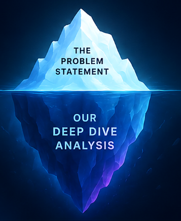
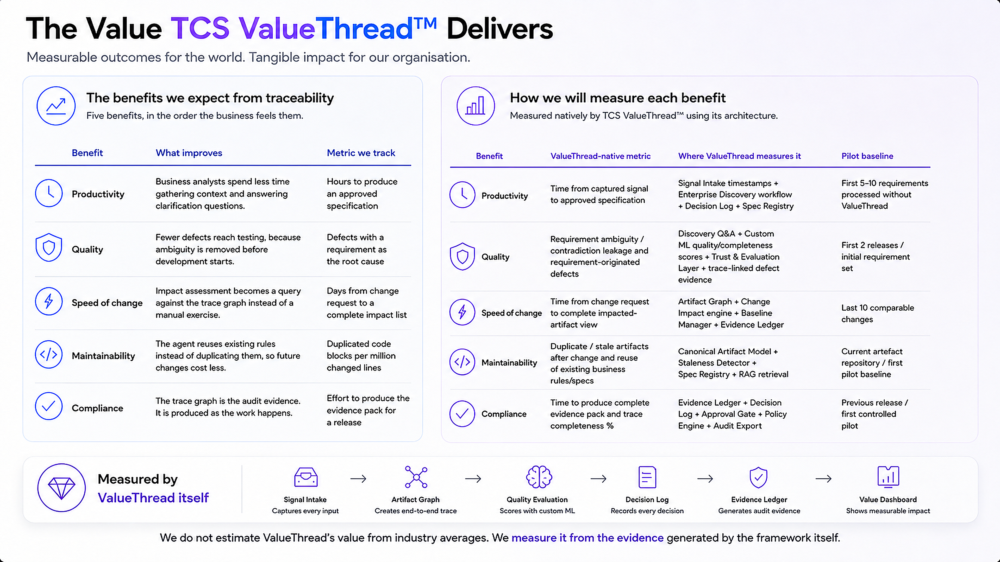

Methodology
Transforming Business Analysis
Idea to Traceable Requirements
Solving the fragmentation of business needs to ensure clear line-of-sight to value outcomes.
Solving the fragmentation of business needs to ensure clear line-of-sight to value outcomes.


Six months. Every test green. The business need — missed.
Every tool stores requirements. None challenges one.
| Discover | Challenge | Trace | Value | |
|---|---|---|---|---|
| Jira · Azure DevOps | ||||
| Confluence · docs | ||||
| Jama · DOORS | ||||
| GenAI copilots |
Before building a solution, we took a step back to truly understand the problem.
We started with the problem statement.
We went beyond the surface to study the ecosystem.
Because the right solution starts with the right questions.

Identify who the personas are, what they do daily, and where they need the most support.
Analyse what work can be done by AI, what products exist in the market, and where the real gaps still persist.
Discover the core components we need to build to truly solve the problem end-to-end.
Before proposing a fix, we paused after the problem statement and ran one connected investigation across the full SDLC.
Every role across the SDLC.
17 rolesTheir real day-to-day work.
136 tasksTested against real capability.
coverage scoredTools solving pieces of it.
36 productsWhat no product closes.
15 gapsTrust, context retention, and privacy.
human oversight requiredEach answer fed the next question — the role shaped what we tested, what we tested shaped the gaps we could see, and the gaps define what we still need to build.
A layered AI agent architecture to discover, challenge, structure and trace business needs. Governed. Explainable. Measurable.
Engage stakeholders and manage work.
Orchestrate agents, tools and workflows.
Discover, analyze and shape requirements.
Maintain specifications and artifacts.
Evaluate quality, safety and conformance.
Enforce governance, security and access.
Capture evidence and measure value.

It has been a privilege demonstrating how TCS ValueThread™ can drive end-to-end SDLC traceability, scalability, and measurable business outcomes.